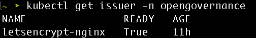

DigitalOcean
Overview
This guide helps configure access to Opengovernance deployed on DigitalOcean Kubernetes, using NGINX Ingress Controller.
Contents
- Prerequisites
- Step 1: Installing NGINX Ingress Controller
- Step 2: Update DNS record
- Step 3: Configuring TLS Certificate using
cert-manager - Step 4: Update the Application configuration
- Step 5: Deploying the Ingress
Prerequisites
- Helm - Installation guide.
- Kubectl - Installation guide
- Opengovernance installed on a DigitalOcean Kubernetes Cluster.
- Access to modify DNS records of a domain.
Step 1: Installing NGINX Ingress Controller
Add the official nginx helm repository and update helm.
helm repo add ingress-nginx https://kubernetes.github.io/ingress-nginx
helm repo update ingress-nginx
Create nginx-ingress-values.yaml to use when installing NGINX Ingress Controller
# nginx-ingress-values.yaml
controller:
replicaCount: 2
resources:
requests:
cpu: 100m
memory: 90Mi
Install the NGINX Ingress Controller using helm
helm install ingress-nginx ingress-nginx/ingress-nginx \
--namespace ingress-nginx \
--create-namespace \
-f nginx-ingress-values.yaml
It may take a few minutes for the load balancer IP to be available. You can watch the status by running
kubectl get service --namespace ingress-nginx ingress-nginx-controller --output wide --watch
EXTERNAL-IP field.
Step 2: Update DNS record
Create a DNS record pointing to the A value. In this example we wiil use opengovernance.domain.com to create the DNS record.
Step 3: Configuring TLS Certificate using cert-manager
Skip to Step 4 if you already have
cert-managerinstalled.
Add the official jetstack helm repository.
helm repo add jetstack https://charts.jetstack.io
helm repo update jetstack
Create cert-manager-values.yaml to use when installing cert-manager
# cert-manager-values.yaml
crds:
enabled: true
prometheus:
enabled: false
Install the cert-manager chart using helm
helm install cert-manager jetstack/cert-manager \
--namespace cert-manager \
--create-namespace \
-f cert-manager-values.yaml
Create a kubernetes manifest cert-manager-issuer.yaml to define a certificate issuer resource. Make sure to replace the email field with a valid email address.
# cert-manager-issuer.yaml
apiVersion: cert-manager.io/v1
kind: Issuer
metadata:
name: letsencrypt-nginx
namespace: opengovernance
spec:
acme:
email: <a-valid-email-address>
server: https://acme-v02.api.letsencrypt.org/directory
privateKeySecretRef:
name: letsencrypt-nginx-private-key
solvers:
- http01:
ingress:
class: nginx
Deploy the above manifest
kubectl apply -f cert-manager-issuer.yaml
Verify the issuer is ready
kubectl get issuer -n opengovernance
READY should be True

Step 4: Update the Application configuration
Download and open the values.yaml file in an editor.
curl -O https://raw.githubusercontent.com/kaytu-io/kaytu-charts/main/charts/open-governance/values.yaml
The values.yaml must now look like the following
opengovernance:
replicaCount: 1
envType: dev
domain:
main: opengovernance.domain.com
...
dex:
configSecret:
create: false
config:
staticClients:
- id: public-client
name: 'Public Client'
redirectURIs:
- 'https://kaytu.app.domain/callback'
- 'http://kaytu.app.domain/callback'
- 'http://localhost:3000/callback'
- 'http://localhost:8080/callback'
- 'https://opengovernance.domain.com/callback'
- 'http://opengovernance.domain.com/callback'
public: true
- id: private-client
name: 'Private Client'
redirectURIs:
- 'https://kaytu.app.domain/callback'
- 'https://opengovernance.domain.com/callback'
- 'http://opengovernance.domain.com/callback'
...
For an example refer to this values.yaml
Apply these changes to the cluster using the following command
helm upgrade -f values.yaml opengovernance opengovernance/open-governance -n opengovernance
Once the changes have been applied, we need to restart the pod corresponding to dex.
Retrieve the pod name:
POD_NAME=$(kubectl get pods -n opengovernance -l app.kubernetes.io/instance=opengovernance,app.kubernetes.io/name=dex -o jsonpath='{.items[*].metadata.name}')
kubectl delete pod $POD_NAME -n opengovernance
Step 5: Deploying the Ingress
Create a kubernetes manifest ingress.yaml to define an ingress. Make sure to replace <your-custom-domain> with your domain.
# ssuer.yaml
apiVersion: networking.k8s.io/v1
kind: Ingress
metadata:
name: kaytu-ingress
namespace: opengovernance
annotations:
cert-manager.io/issuer: letsencrypt-nginx
spec:
tls:
- hosts:
- <your-custom-domain>
secretName: letsencrypt-nginx
ingressClassName: nginx
rules:
- host: <your-custom-domain>
http:
paths:
- path: /
pathType: Prefix
backend:
service:
name: nginx-proxy
port:
number: 80
Deploy the above manifest
kubectl apply -f issuer.yaml
Confirm that the certificate is issued and Ready. The certificate might take a few minutes to get to Ready state.
kubectl get certificates -n opengovernance